ระบบให้นักศึกษา TA ล็อกอินด้วยรหัส OTP ทางอีเมล @cmu.ac.th แล้วดูชั่วโมงของตนเอง กดยืนยัน หรือ รายงาน ว่าไม่ถูกต้อง ส่วนเจ้าหน้าที่ดูสถานะของนักศึกษาทุกคนและรับแจ้งเตือนเมื่อมีรายงาน
ภาพหน้าจอในคู่มือใช้ ข้อมูลสมมติ (ชื่อ รหัส และอีเมลไม่ใช่ของจริง) วงสีส้มที่มีตัวเลข คือจุดที่กรอกหรือกดได้ เลขตรงกับคำอธิบายใต้ภาพ
ระบบนี้ใช้ได้ทั้งมือถือและคอมพิวเตอร์ ไม่ต้องสมัครสมาชิกหรือตั้งรหัสผ่าน
เปิดลิงก์ที่เจ้าหน้าที่ส่งให้ จะพบหน้าเข้าสู่ระบบ จุดที่ กรอกได้ตั้งแต่แรก คือช่องอีเมลช่องเดียว
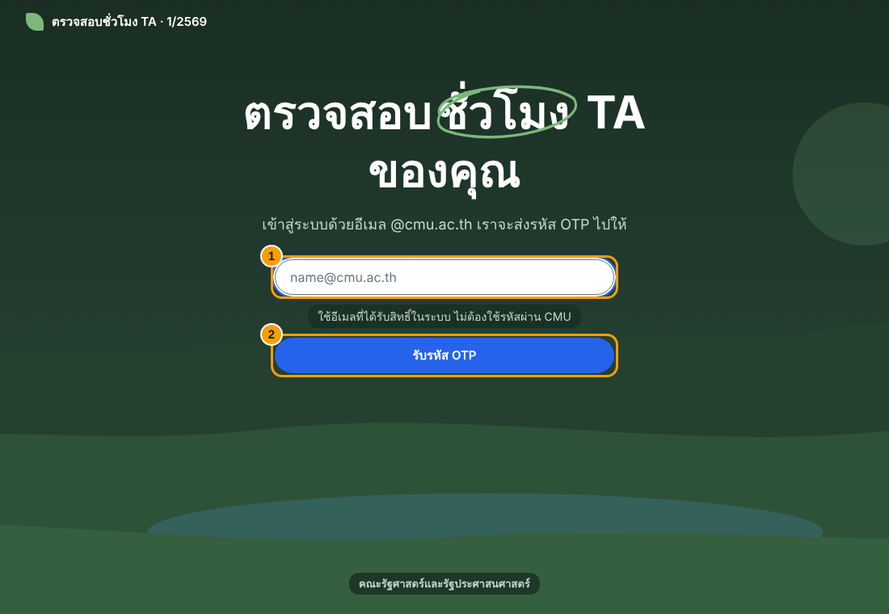
| เลข | ทำอะไรได้ |
|---|---|
| ① | ช่องอีเมล (กรอกได้) ใส่อีเมลมหาวิทยาลัยของคุณ ...@cmu.ac.th ต้องเป็นอีเมลที่ลงทะเบียนไว้กับเจ้าหน้าที่ |
| ② | ปุ่ม "รับรหัส OTP" (กดได้) ระบบส่งรหัส 6 หลักไปที่อีเมล |
ใช้อีเมลของตนเองเท่านั้น หากอีเมลไม่อยู่ในรายชื่อ ระบบจะไม่ส่งรหัสให้ (และไม่แจ้งว่าอีเมลนั้นมีหรือไม่มีในระบบ) ให้ติดต่อเจ้าหน้าที่
ตรวจกล่องจดหมายของคุณ จะได้อีเมลหน้าตาแบบนี้ ภายในประมาณ 1–2 นาที
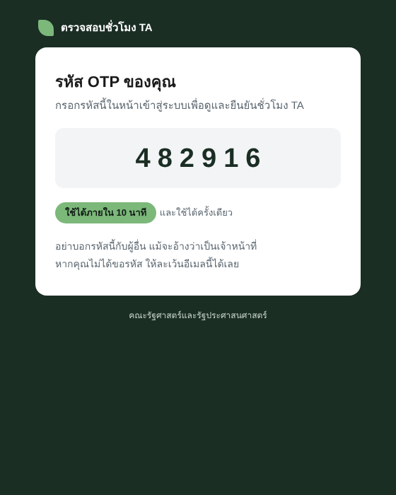
กลับมาที่หน้าเว็บ หน้าจอเปลี่ยนเป็นหน้ากรอกรหัสโดยอัตโนมัติ
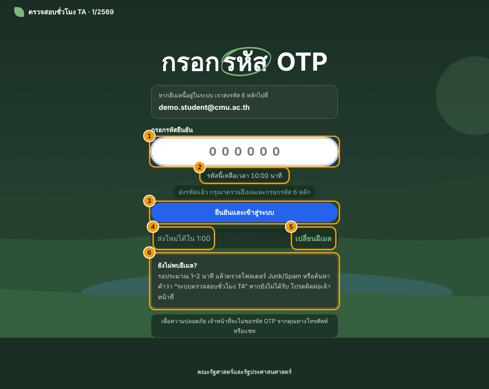
| เลข | ทำอะไรได้ |
|---|---|
| ① | ช่องรหัส 6 หลัก (กรอกได้) พิมพ์ตัวเลขจากอีเมล (กรอกได้เฉพาะตัวเลข) |
| ② | เวลานับถอยหลัง (ดูอย่างเดียว) บอกเวลาที่รหัสเหลือ เมื่อหมดเวลาปุ่มยืนยันจะกดไม่ได้ |
| ③ | ปุ่ม "ยืนยันและเข้าสู่ระบบ" (กดได้) |
| ④ | ปุ่ม "ส่งรหัสใหม่" (กดได้เมื่อหมดเวลารอ 1 นาที) ใช้เมื่อไม่ได้รับอีเมลหรือรหัสหมดอายุ ให้ใช้รหัสล่าสุดเท่านั้น |
| ⑤ | ปุ่ม "เปลี่ยนอีเมล" (กดได้) กลับไปหน้าแรกเพื่อกรอกอีเมลใหม่ |
| ⑥ | กล่องช่วยเหลือ (ดูอย่างเดียว) วิธีหาอีเมลที่ยังไม่มา |
ถ้ากรอกรหัสผิด จะขึ้นข้อความสีแดงแล้วลองใหม่ได้ (กรอกผิดได้ไม่เกิน 5 ครั้ง ถ้าเกินต้องขอรหัสใหม่)
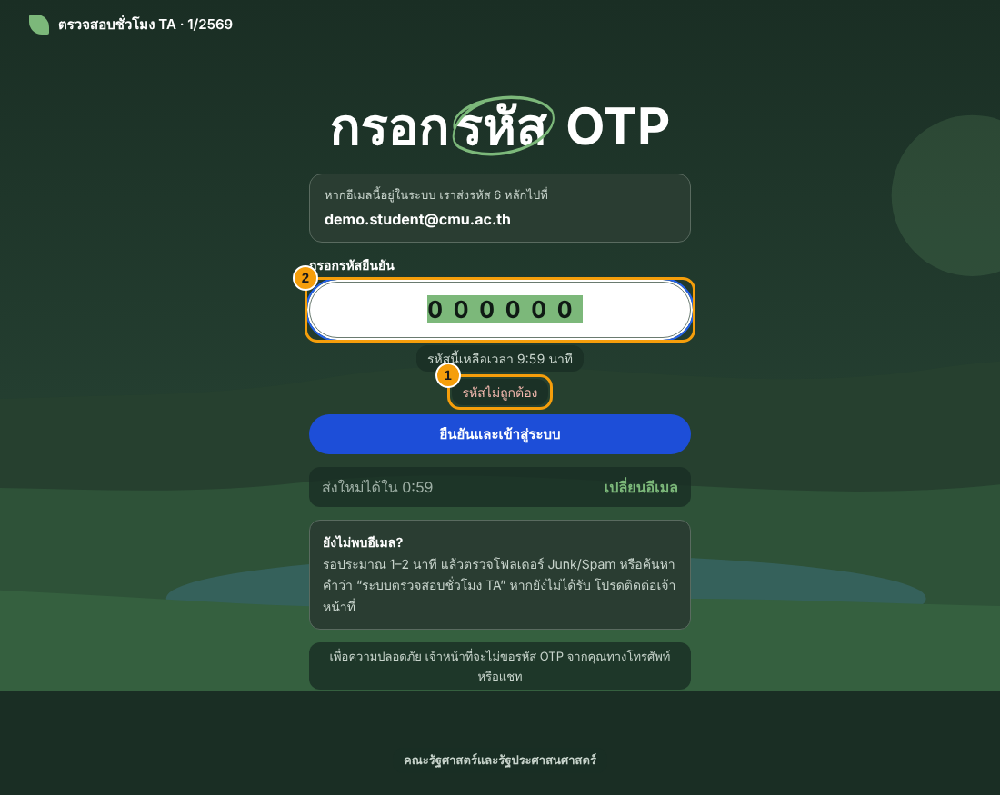
เมื่อเข้าสู่ระบบสำเร็จ จะเห็นหน้าสรุปชั่วโมงของคุณ
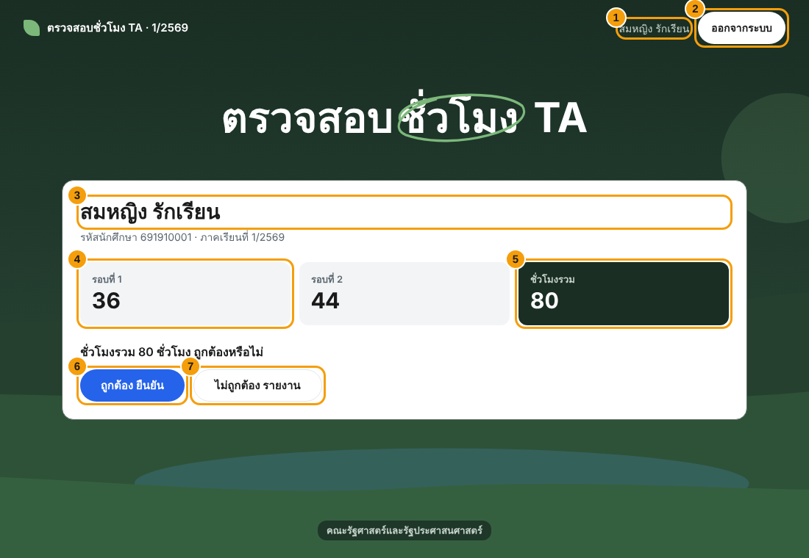
| เลข | อะไร | ทำอะไรได้ |
|---|---|---|
| ① | ชื่อของคุณ (มุมขวาบน) | ดูอย่างเดียว ใช้เช็กว่าล็อกอินถูกบัญชี |
| ② | ออกจากระบบ | กดได้ แนะนำให้กดเมื่อใช้เครื่องสาธารณะ |
| ③ | ชื่อ-สกุล รหัสนักศึกษา ภาคเรียน | ดูอย่างเดียว |
| ④ | ชั่วโมงแต่ละรอบ (รอบที่ 1, 2) | ดูอย่างเดียว |
| ⑤ | ชั่วโมงรวม (กล่องสีเข้ม) | ดูอย่างเดียว คือตัวเลขที่ต้องตรวจ |
| ⑥ | ปุ่ม "ถูกต้อง ยืนยัน" | กดได้ ถ้าชั่วโมงถูกต้อง |
| ⑦ | ปุ่ม "ไม่ถูกต้อง รายงาน" | กดได้ ถ้าไม่ถูกต้อง จะมีช่องให้พิมพ์รายละเอียด |
ตรวจให้ละเอียดก่อนกด: เทียบชั่วโมงรวมกับใบลงเวลาและตารางของคุณ
ระบบบันทึกการยืนยันพร้อมวันเวลาทันที
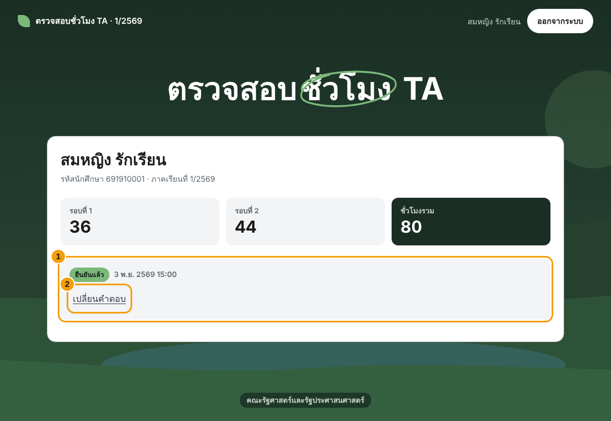
| เลข | ทำอะไรได้ |
|---|---|
| ① | สถานะ ป้ายสีเขียว "ยืนยันแล้ว" พร้อมวันเวลา |
| ② | "เปลี่ยนคำตอบ" (กดได้) กลับไปเลือกใหม่ ถ้ากดผิด |
จะมีช่องให้บอกเจ้าหน้าที่ว่าผิดตรงไหน
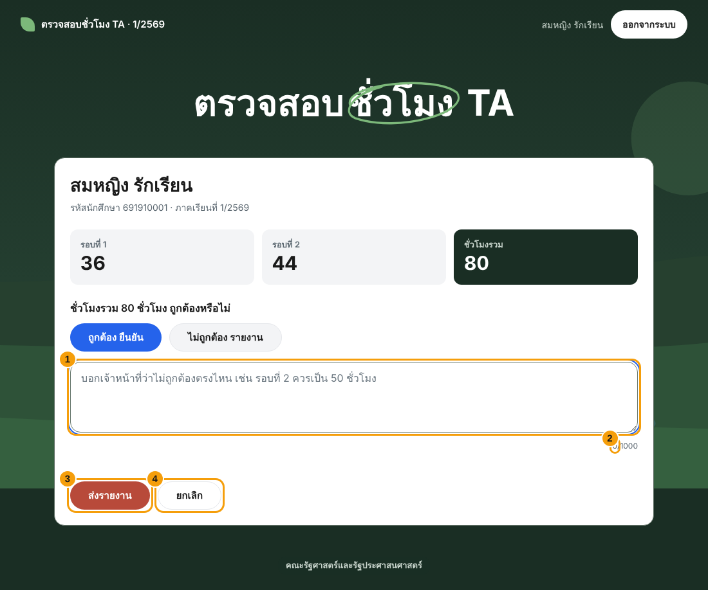
| เลข | ทำอะไรได้ |
|---|---|
| ① | ช่องรายละเอียด (กรอกได้) พิมพ์ว่าไม่ถูกต้องตรงไหน เช่น "รอบที่ 2 ควรเป็น 50 ชั่วโมง เพราะ..." พิมพ์ได้ไม่เกิน 1,000 ตัวอักษร |
| ② | ตัวนับตัวอักษร (ดูอย่างเดียว) |
| ③ | ปุ่ม "ส่งรายงาน" (กดได้) |
| ④ | ปุ่ม "ยกเลิก" (กดได้) ปิดช่องนี้โดยไม่ส่งอะไร |
ต้องพิมพ์อย่างน้อย 10 ตัวอักษร ถ้าสั้นเกินไปจะไม่ส่ง และขึ้นข้อความให้อธิบายเพิ่ม
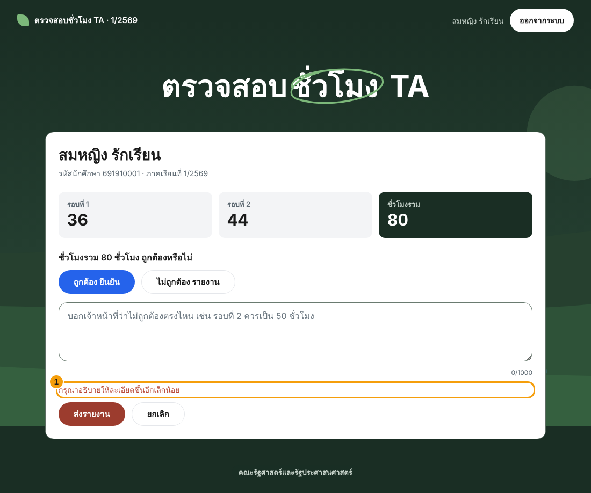
เขียนให้เจ้าหน้าที่ตรวจต่อได้ง่าย บอกรอบที่ผิด ตัวเลขที่ถูกต้องที่คุณคิดว่าควรเป็น และเหตุผลหรือวันที่ที่เกี่ยวข้อง
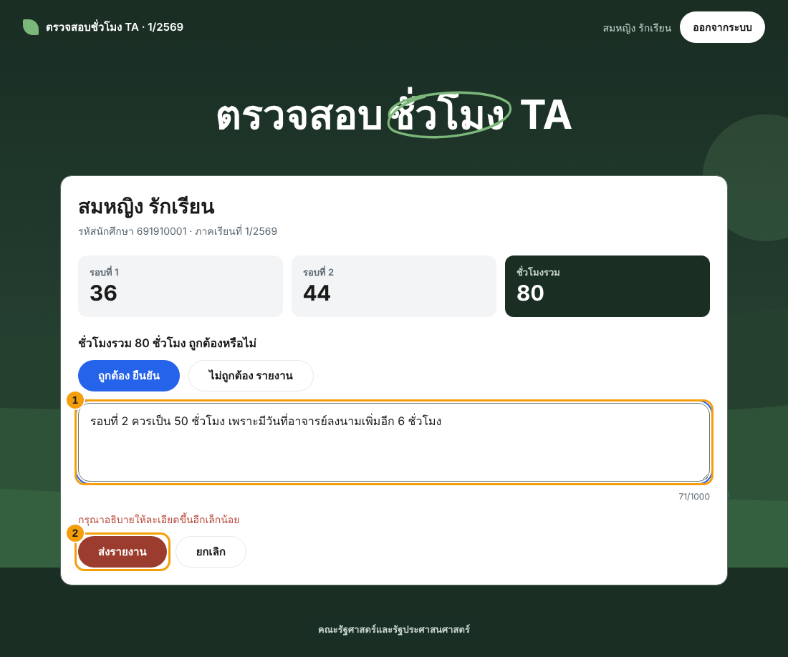
กด "ส่งรายงาน" (②) แล้วระบบส่งถึงเจ้าหน้าที่ทันที (เจ้าหน้าที่ได้รับอีเมลแจ้งเตือนด้วย)
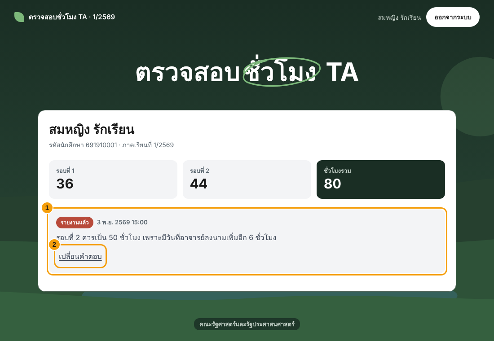
| เลข | ทำอะไรได้ |
|---|---|
| ① | สถานะ ป้ายสีแดง "รายงานแล้ว" พร้อมข้อความที่คุณส่ง |
| ② | "เปลี่ยนคำตอบ" (กดได้) ส่งรายงานใหม่หรือเปลี่ยนเป็นยืนยัน |
ถ้าชั่วโมงในระบบถูกปรับ หลังจากที่คุณยืนยันหรือรายงานไปแล้ว ระบบจะแจ้งและให้ ตอบอีกครั้ง เมื่อกลับมาเปิดหน้านี้
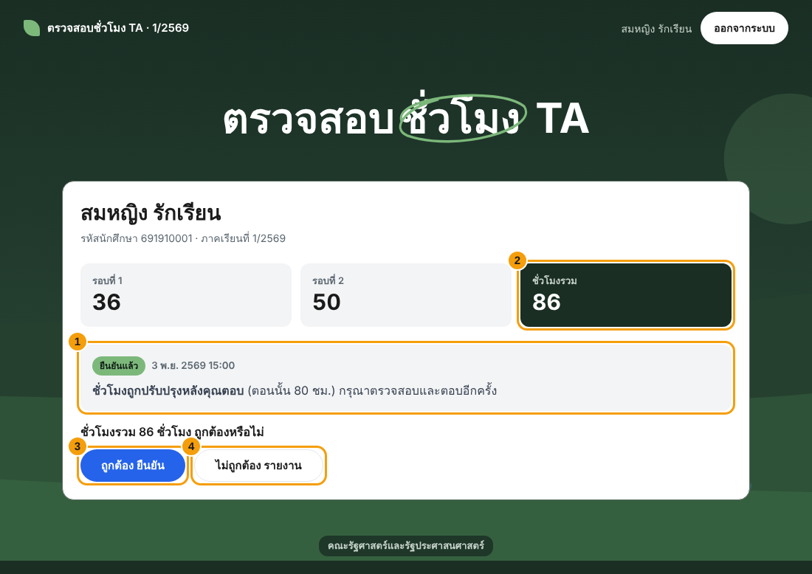
| เลข | อะไร |
|---|---|
| ① | ข้อความ "ชั่วโมงถูกปรับปรุงหลังคุณตอบ" บอกชั่วโมงเดิมที่คุณเห็น |
| ② | ชั่วโมงรวมใหม่ |
| ③ ④ | กด "ถูกต้อง ยืนยัน" หรือ "ไม่ถูกต้อง รายงาน" ได้อีกครั้ง |
หน้าตาเหมือนกัน ปุ่มเรียงลงมา กดง่ายด้วยนิ้ว
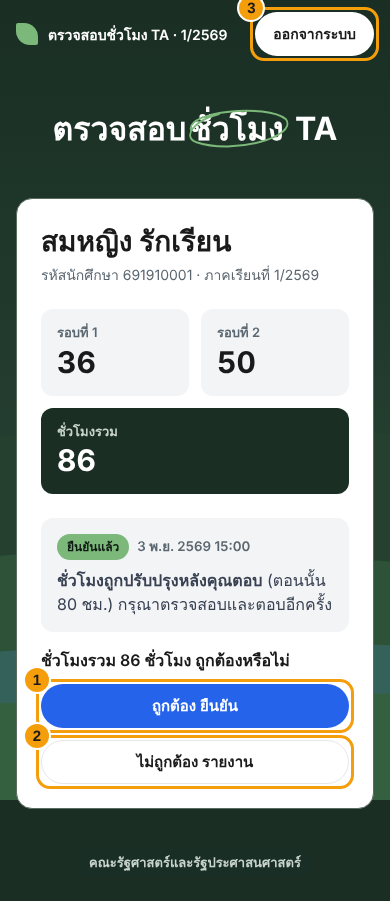
① ถูกต้อง ยืนยัน ② ไม่ถูกต้อง รายงาน ③ ออกจากระบบ
| ข้อความ / อาการ | ทำอย่างไร |
|---|---|
| ไม่ได้รับอีเมล OTP | รอ 1–2 นาที ตรวจ Junk/Spam จากนั้นกด "ส่งรหัสใหม่" ถ้ายังไม่ได้ ตรวจว่าพิมพ์อีเมลถูกและเป็นอีเมลที่ลงทะเบียนไว้ แล้วติดต่อเจ้าหน้าที่ |
| รหัสไม่ถูกต้อง | ตรวจตัวเลขอีกครั้ง และใช้ รหัสล่าสุดเท่านั้น (ถ้าขอรหัสหลายครั้ง รหัสเก่าใช้ไม่ได้) |
| รหัสหมดอายุ / กรอกผิดเกินกำหนด | กด "ส่งรหัสใหม่" |
| ขอรหัสบ่อยเกินไป | รอ 1 นาทีแล้วลองใหม่ |
| ส่งอีเมลไม่สำเร็จ | กดขอรหัสใหม่อีกครั้ง ถ้ายังไม่ได้ ติดต่อเจ้าหน้าที่ |
| ระบบส่งอีเมลเต็มโควตาของวันนี้ | ลองใหม่พรุ่งนี้หรือติดต่อเจ้าหน้าที่ |
| เซสชันหมดอายุ กรุณาเข้าสู่ระบบใหม่ | ระบบให้ใช้งานต่อเนื่องได้ราว 6 ชั่วโมง แล้วต้องขอ OTP ใหม่ |
| ยังไม่มีข้อมูลชั่วโมงของคุณในภาคเรียนนี้ | แจ้งเจ้าหน้าที่ ชื่อของคุณอาจยังไม่ถูกนำเข้า |
เจ้าหน้าที่ใช้ลิงก์เดียวกับนักศึกษา และ ล็อกอินด้วย OTP แบบเดียวกัน (ขั้นที่ 1–3 ข้างต้น) แต่ใช้อีเมลที่ลงไว้ในแท็บ Staff ของชีต เมื่อเข้าสำเร็จจะเห็น แดชบอร์ด แทนหน้านักศึกษา
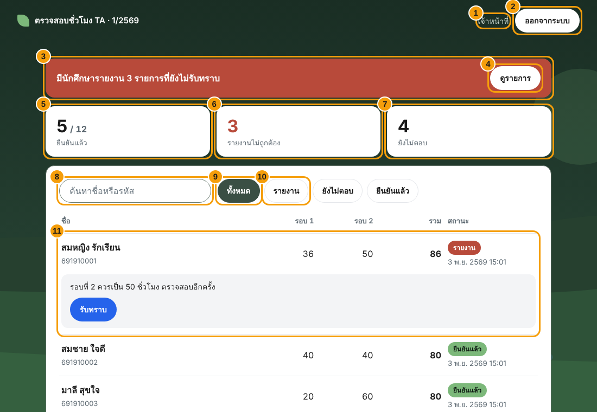
| เลข | อะไร | ทำอะไรได้ |
|---|---|---|
| ① | ชื่อผู้ใช้ (มุมขวาบน) | ดูอย่างเดียว |
| ② | ออกจากระบบ | กดได้ |
| ③ | แบนเนอร์แดง "มีนักศึกษารายงาน N รายการที่ยังไม่รับทราบ" | ดูอย่างเดียว แสดงเมื่อมีรายงานที่ยังไม่กดรับทราบ (หายไปเมื่อรับทราบครบ) |
| ④ | ปุ่ม "ดูรายการ" | กดได้ กรองเฉพาะรายงานไม่ถูกต้อง |
| ⑤ | ยืนยันแล้ว (เช่น 5 / 12) | ดูอย่างเดียว จำนวนที่ยืนยันแล้ว / นักศึกษาทั้งหมด |
| ⑥ | รายงานไม่ถูกต้อง | ดูอย่างเดียว (ตัวเลขสีแดงเมื่อมี) |
| ⑦ | ยังไม่ตอบ | ดูอย่างเดียว ใช้ตามคนที่ยังไม่ตอบ |
| ⑧ | ช่องค้นหา (กรอกได้) | พิมพ์ชื่อหรือรหัสนักศึกษา |
| ⑨ ⑩ | ปุ่มกรองสถานะ ทั้งหมด / รายงาน / ยังไม่ตอบ / ยืนยันแล้ว | กดได้ ปุ่มที่เลือกอยู่เป็นสีเขียวเข้ม |
| ⑪ | แถวนักศึกษา | ชื่อ รหัส ชั่วโมงรอบที่ 1, 2 ชั่วโมงรวม และป้ายสถานะพร้อมวันเวลาที่ตอบ แถวที่ "รายงาน" จะแสดงข้อความของนักศึกษาและปุ่มรับทราบ |
ป้ายสถานะ: ยืนยันแล้ว (เขียว) · รายงาน (แดง) · ยังไม่ตอบ (เทา) · ชม.เปลี่ยน (ขอบขาว) หมายถึงชั่วโมงถูกแก้หลังนักศึกษาตอบ
หน้านี้ รีเฟรชข้อมูลอัตโนมัติทุก 1 นาทีขณะเปิดแท็บนี้อยู่ (และรีเฟรชทันทีเมื่อสลับกลับมาที่แท็บ) ตัวเลขรายงานใหม่จะแสดงบนชื่อแท็บเบราว์เซอร์ด้วย เช่น (3) ตรวจสอบชั่วโมง TA ทำให้เห็นได้แม้เปิดหน้าไว้ข้างหลัง
หน้าทั้งหมดต่อเนื่องลงมา (รายชื่อนักศึกษาทุกคน):
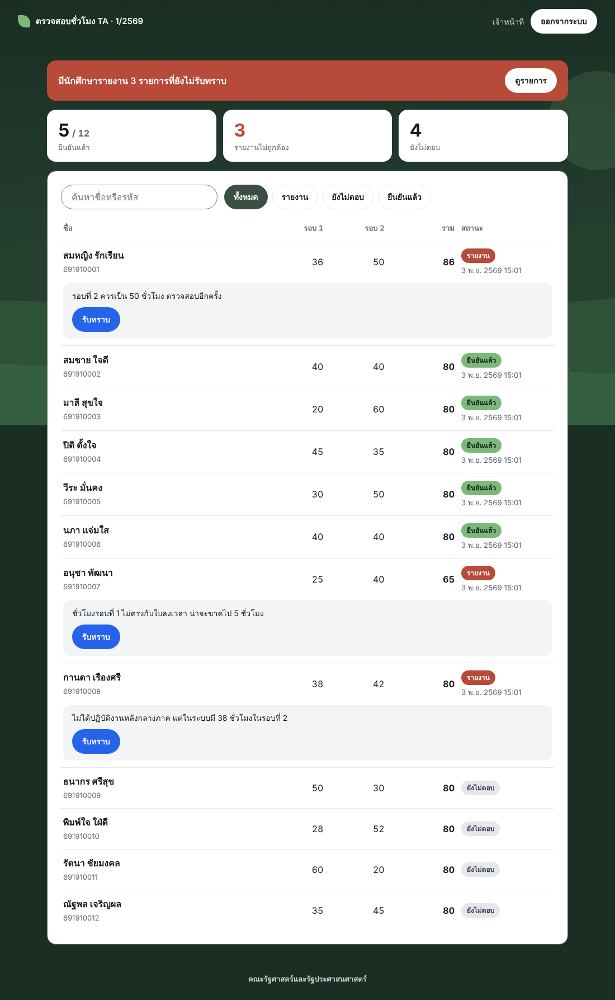
กด "ดูรายการ" (④) หรือปุ่มกรอง "รายงาน" เพื่อดูเฉพาะรายงาน
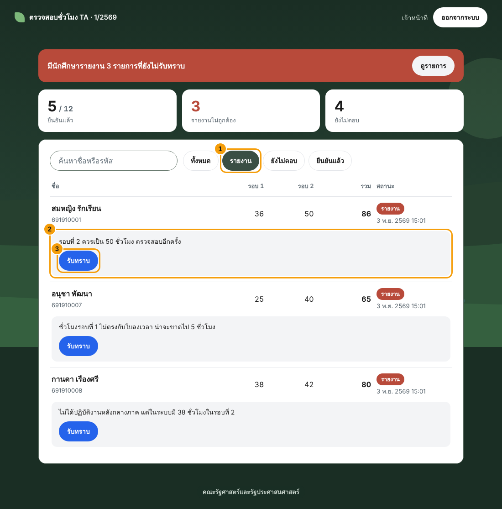
| เลข | ทำอะไรได้ |
|---|---|
| ① | ปุ่มกรอง "รายงาน" กดแล้วเห็นเฉพาะคนที่รายงาน |
| ② | ข้อความจากนักศึกษา (ดูอย่างเดียว) อ่านรายละเอียดว่าผิดตรงไหน |
| ③ | ปุ่ม "รับทราบ" (กดได้) กดเมื่อคุณเห็นและดำเนินการแล้ว |
หลังกด "รับทราบ" ปุ่มเปลี่ยนเป็นข้อความ "รับทราบแล้ว" และแบนเนอร์ลดจำนวนลง (เมื่อรับทราบครบ แบนเนอร์หายไป)
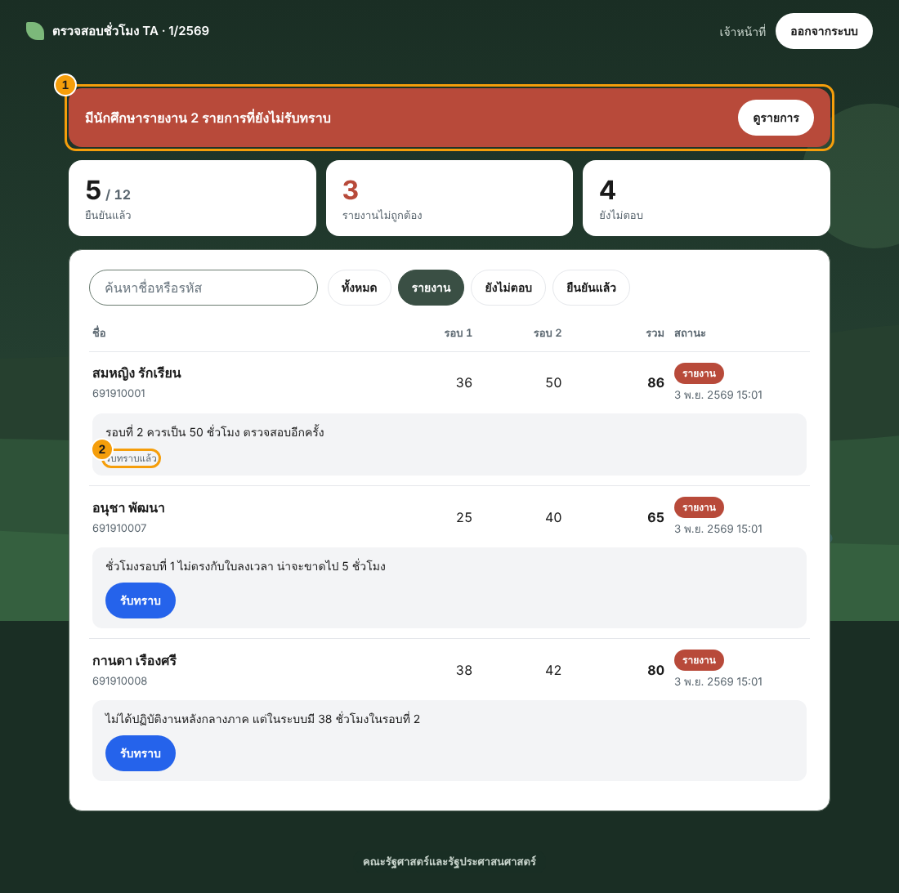
① แบนเนอร์ลดจำนวนลง ② ข้อความ "รับทราบแล้ว"
สิ่งที่ควรทำเมื่อมีรายงาน
1. อ่านข้อความของนักศึกษา แล้วตรวจกับเอกสารต้นฉบับ
2. ถ้าต้องแก้ชั่วโมง ให้แก้ที่แท็บ Hours ในชีต (ช่อง hours ของแถวนั้น) ระบบจะแสดงป้าย "ชม.เปลี่ยน" และให้นักศึกษาตอบใหม่
3. กด "รับทราบ" เพื่อบอกทีมว่ารายการนี้มีคนดูแล
พิมพ์ในช่องค้นหา (①) ผลจะแสดงทันที ค้นได้ทั้งชื่อและรหัส
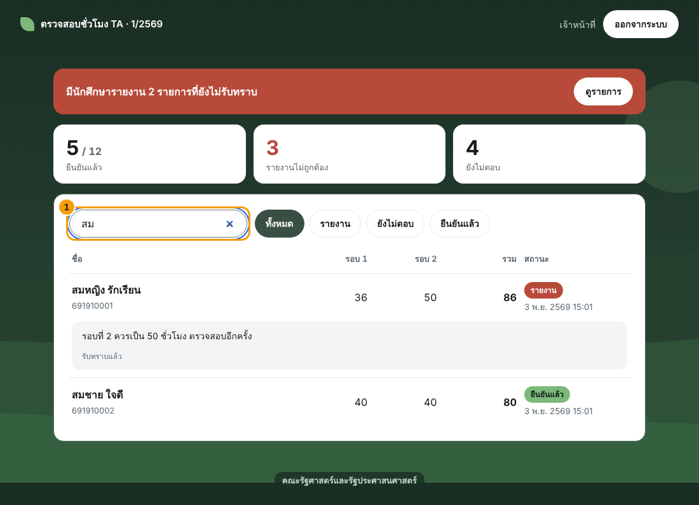
กดปุ่มกรอง "ยังไม่ตอบ" เพื่อดูรายชื่อที่ต้องติดตาม
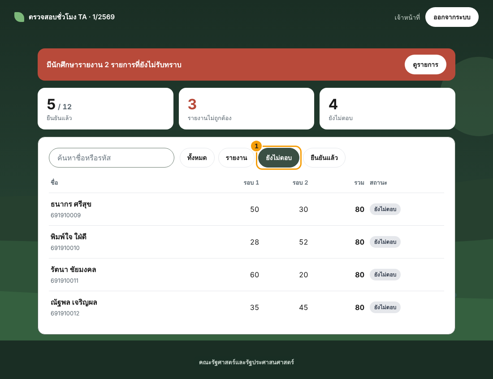
ปุ่มกรองและช่องค้นหาใช้ร่วมกันได้ เช่น กรอง "ยังไม่ตอบ" แล้วพิมพ์ชื่อ
แถวรายชื่อเรียงต่อกันเป็นการ์ด ใช้งานได้ครบเหมือนบนคอมพิวเตอร์
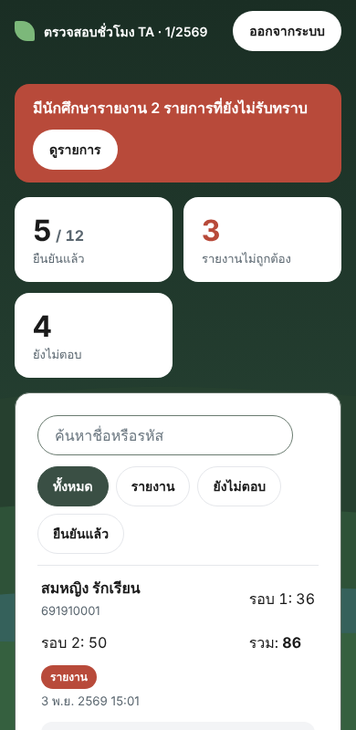
เมื่อนักศึกษากด "ส่งรายงาน" ระบบส่งอีเมลถึง เจ้าหน้าที่ทุกคนในแท็บ Staff หัวเรื่องแบบนี้
[TA 1/2569] นักศึกษารายงานชั่วโมงไม่ถูกต้อง: สมหญิง รักเรียน (691910001)
เนื้อหาบอกชื่อ รหัส ชั่วโมงรวมในระบบ ข้อความของนักศึกษา และลิงก์เปิดระบบ (ปิดการแจ้งเตือนทางอีเมลได้โดยตั้งค่า NOTIFY_EMAIL เป็น FALSE ในแท็บ Config)
| ต้องการ | ทำที่ไหน |
|---|---|
| เพิ่ม/ลบเจ้าหน้าที่ | แท็บ Staff เพิ่มแถวอีเมลและชื่อ (มีผลทันที) |
| แก้ชั่วโมงนักศึกษา | แท็บ Hours (หนึ่งแถวต่อคนต่อรอบ) |
| เปลี่ยนภาคเรียน | แท็บ Config แก้ค่า TERM แล้วนำเข้าข้อมูลภาคใหม่ |
| ดูประวัติการตอบ | แท็บ Response (บันทึกทุกครั้งที่นักศึกษากดยืนยัน/รายงาน) |
| ดูว่าใครรับทราบรายงาน | แท็บ Ack |
| ปรับเวลาหมดอายุ OTP / จำนวนครั้งที่กรอกผิดได้ / จำนวนตัวอักษรขั้นต่ำของรายงาน | แท็บ Config |
| อาการ | สาเหตุ / วิธีแก้ |
|---|---|
| ได้รับ OTP แต่เห็นหน้านักศึกษา | อีเมลนั้นไม่อยู่ในแท็บ Staff ให้เพิ่มแถวนั้นก่อน |
| แดชบอร์ดว่างเปล่า "ไม่พบรายการ" | ค่า TERM ในแท็บ Config ไม่ตรงกับภาคเรียนในแท็บ Hours หรือยังไม่นำเข้าข้อมูล |
| นักศึกษาบอกไม่ได้รับ OTP | ตรวจว่าอีเมลของเขาในแท็บ Student ถูกต้องและเป็น @cmu.ac.th ให้เขากดส่งรหัสใหม่ และตรวจ Junk |
| ส่งอีเมลไม่ได้ทั้งระบบ | อาจเต็มโควตาอีเมลของวัน (ระบบจะแจ้งข้อความนี้) รอวันถัดไป |
| รายงานมาแล้วแต่ไม่ได้อีเมล | ตรวจ NOTIFY_EMAIL ใน Config และโฟลเดอร์ Junk ของเจ้าหน้าที่ ข้อมูลรายงานยังอยู่ในแดชบอร์ดและแท็บ Response |